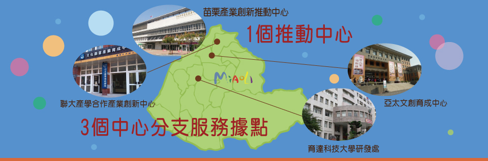

1
2
3
4
5
6
7
8
首頁 > 輔導案例 > 微型產業技術輔導計畫
微型產業技術輔導計畫
-
計畫名稱
蘭嶼特產地瓜、芋頭伴手禮開發計畫
-
受輔導公司
蘭嶼迦南園
-
公司住址
台東縣952蘭嶼鄉朗島村17-1號
-
聯絡方式
089-732286
-
補助金額
150000
-
業者現況
迦南園藉由教會的體系，努力的協助蘭嶼在地的特色產品行銷，由於地處偏遠離島，欠缺創新的產品上市，在產品的多樣性跟行銷上仍受到阻礙，由其是在蘭嶼地區，雖有豐富的農特產品，但卻無技術提升農特產品價值，來顯示出在地特色的所在。
-
輔導項目
蘭嶼地瓜、芋頭拌手禮開發：蘭嶼地區所生產的有機地瓜與芋頭，在口感與風味有別於台灣或其他地區，也是到蘭嶼旅遊的遊客口耳相傳中的值得消費的特產，因此成為禮品的可能性相對的提高，並引藉花蓮遠雄五星級飯店的糕點師，利用蘭嶼在地的傳統食材搭配出獨具風味的地瓜與芋頭的拌手禮。
-
包裝應用設計
利用俐落的簡約設計風格，減少包裝材質上的浪費，讓道香星村的產品 從傳統的食品樣貌，改變成讓人充滿現代感的貼心而精緻的伴手禮盒。
-
輔導效益
增加地瓜相關伴手禮品銷售30,000元（150/元×200/盒＝30,000）。
增加芋頭相關伴手禮品銷售30,000（150/元×200/盒＝30,000）。
降低設計成本10,000元。
改善整體餐點設計與學習餐飲商品創新能力，增加餐飲產品銷售40,000元。
-
相關照片